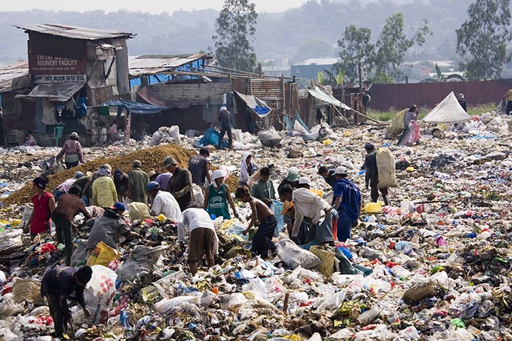

Land pollution, according to Britannica, is the deposition of solid or liquid waste materials on land or underground
in a manner that can contaminate the soil and groundwater, threaten public
health, and cause unsightly conditions and nuisances. (Nathanson, J. A., N.D.)
However, the definition is not limited to adding harmful material to soil. It can also be
caused by removal of beneficial or dormant materials from the ground, causing the balance to
tilt, which results in different consequences.
You may watch a video from The Dr. Binocs Show about land pollution below:
Land pollution can be caused by:
Land pollution may cause the following:
Are you ready to save the world? If you feel like
you contribute the most in Land Pollution, you may
click on the link below on how to help reduce Land
Pollution:
Click Here! >